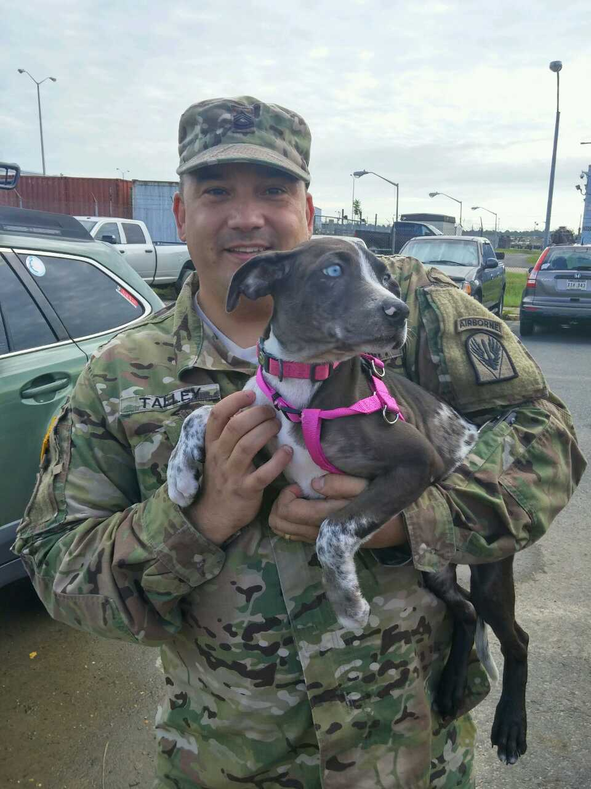
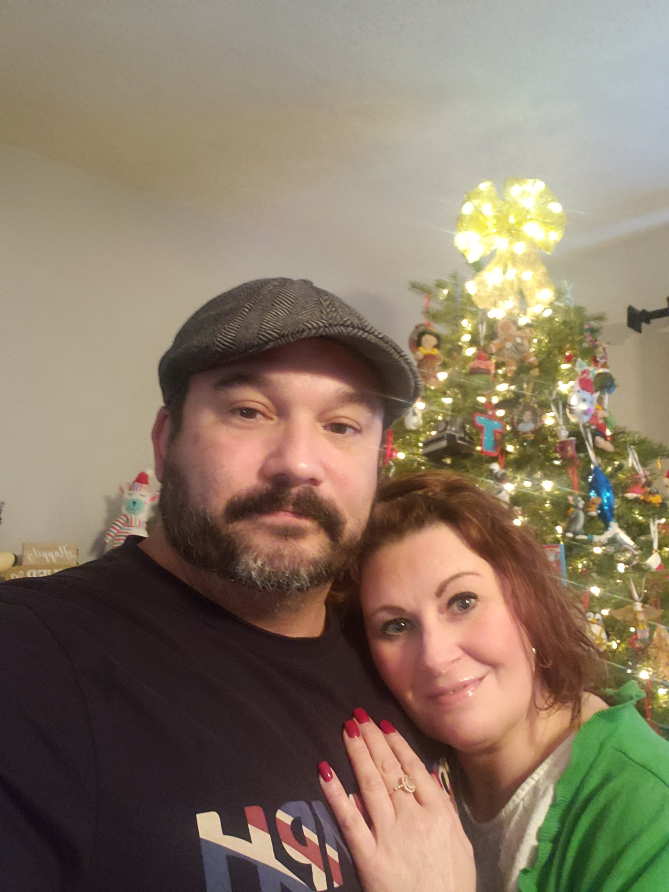

Personal Goals
Billy's father taught him hard work and initiative, and he's carried that through into his adult life. He's currently working on completing a degree in web development, and has also taken courses in UX design. He hopes to incorporate his training into a career working on a web design or web development team.

Accomplishments
Billy spent 15 years in the Army. His greatest accomplishment from his time in the Army was winning the 2012 Airborne Target Surveillance Supervisor of the Year.

Embellishments
Billy has been happily married for 24 years and has two adult sons.